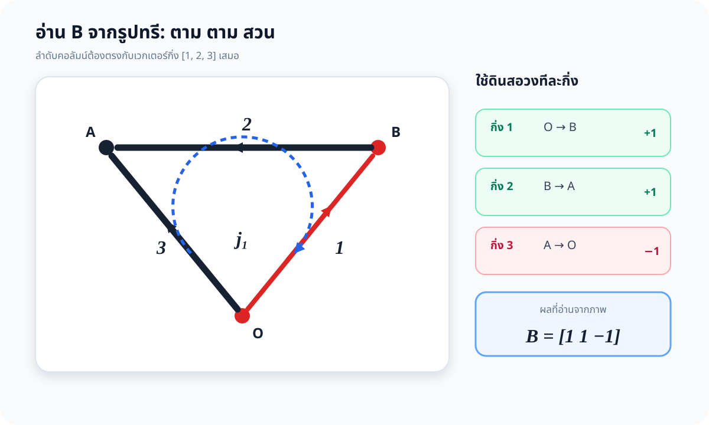
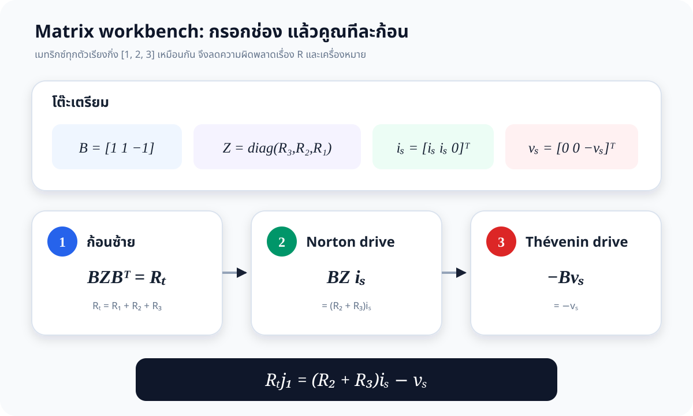
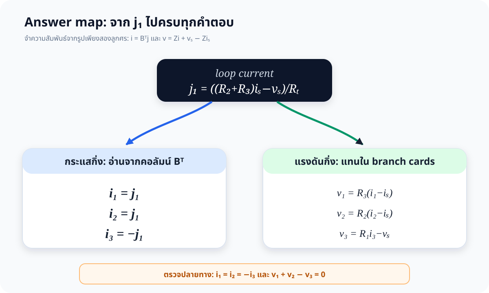

แผน 4 ขั้นที่ใช้ได้จริงในห้องสอบ
ตัดสินใจเรื่องทิศจากรูปเพียงครั้งเดียว แล้วรักษาลำดับกิ่ง [1,2,3] เหมือนกันทุกเมทริกซ์

วงทรี: เริ่มตามทิศลิงก์ 1 จาก \(O\to B\to A\to O\) และวาดลูกศร \(j_1\) ลงบนรูปก่อนเขียนสมการ
\[\begin{gathered}
R_Tj_1=(R_2+R_3)i_s-v_s\\[4pt]
R_T=R_1+R_2+R_3
\end{gathered}\]
1 · อ่านเมทริกซ์ \(\mathbf B\) จากรูป



กฎเดียว: ตาม = +1, สวน = −1
กิ่ง 1วงเดิน \(O\to B\) ตรงกับลูกศร+1
กิ่ง 2วงเดิน \(B\to A\) ตรงกับลูกศร+1
กิ่ง 3วงเดิน \(A\to O\) สวนลูกศร−1
\[\boxed{\mathbf B=\begin{bmatrix}1&1&-1\end{bmatrix}}\]
กระแสจาก KCL อัตโนมัติ
\[\mathbf i_b=\mathbf B^{\mathsf T}j_1\Rightarrow i_1=i_2=j_1,\ i_3=-j_1\]แรงดันจาก KVL อัตโนมัติ
\[\mathbf B\mathbf v_b=0\Rightarrow v_1+v_2-v_3=0\]2 · ทำ Branch Cards สามใบ
เมื่อขั้ว \(+\) ของ \(v_k\) อยู่ที่หางลูกศรกิ่ง แต่ละกิ่งแปลงเป็นการ์ดสั้น ๆ ได้ดังนี้
กิ่ง 1 · Norton
องค์ประกอบ \(i_s\parallel R_3\)
\[v_1=R_3(i_1-i_s)\]กิ่ง 2 · Norton
องค์ประกอบ \(i_s\parallel R_2\)
\[v_2=R_2(i_2-i_s)\]กิ่ง 3 · Thévenin
องค์ประกอบ \(v_s\) อนุกรม \(R_1\)
\[v_3=R_1i_3-v_s\]
\[\mathbf Z_b=\operatorname{diag}(R_3,R_2,R_1),\quad
\mathbf i_{sb}=\begin{bmatrix}i_s\\i_s\\0\end{bmatrix},\quad
\mathbf v_{sb}=\begin{bmatrix}0\\0\\-v_s\end{bmatrix}\]
จุดดัก: แนวทแยงคือ \(R_3,R_2,R_1\) เพราะเรียงตาม “กิ่ง 1,2,3” ไม่ได้เรียงตามเลขตัวต้านทาน
3 · คูณ Matrix เป็นสามก้อน

\[\mathbf B\mathbf Z_b\mathbf B^{\mathsf T}j_1
=\mathbf B\mathbf Z_b\mathbf i_{sb}-\mathbf B\mathbf v_{sb}\]
ก้อน 1
\[\mathbf B\mathbf Z_b\mathbf B^{\mathsf T}=R_1+R_2+R_3=R_T\]ก้อน 2
\[\mathbf B\mathbf Z_b\mathbf i_{sb}=(R_2+R_3)i_s\]ก้อน 3
\[-\mathbf B\mathbf v_{sb}=-v_s\]\[\boxed{j_1=\dfrac{(R_2+R_3)i_s-v_s}{R_1+R_2+R_3}}\]
เปิดดูการคูณเต็มเพื่อใช้ตรวจคำตอบ
\[\begin{bmatrix}1&1&-1\end{bmatrix}
\begin{bmatrix}R_3&0&0\\0&R_2&0\\0&0&R_1\end{bmatrix}
\begin{bmatrix}1\\1\\-1\end{bmatrix}=R_T\]
\[\begin{bmatrix}1&1&-1\end{bmatrix}
\begin{bmatrix}R_3&0&0\\0&R_2&0\\0&0&R_1\end{bmatrix}
\begin{bmatrix}i_s\\i_s\\0\end{bmatrix}=(R_2+R_3)i_s\]
4 · แตกคำตอบจาก \(j_1\)

ให้ \(K=v_s+R_1i_s\) และ \(R_T=R_1+R_2+R_3\)
| ปริมาณ | คำตอบเชิงสัญลักษณ์ | อ่านจาก |
|---|---|---|
| \(j_1\) | \(\dfrac{(R_2+R_3)i_s-v_s}{R_T}\) | สมการสามก้อน |
| \(i_1,i_2\) | \(i_1=i_2=j_1\) | ค่า \(+1,+1\) ใน \(\mathbf B\) |
| \(i_3\) | \(-j_1=\dfrac{v_s-(R_2+R_3)i_s}{R_T}\) | ค่า \(-1\) ใน \(\mathbf B\) |
| \(v_1\) | \(-R_3K/R_T\) | การ์ดกิ่ง 1 |
| \(v_2\) | \(-R_2K/R_T\) | การ์ดกิ่ง 2 |
| \(v_3\) | \(-(R_2+R_3)K/R_T\) | การ์ดกิ่ง 3 |
แบบเขียน 7 ช่องในห้องสอบ
วง \(j_1: O\to B\to A\to O\)
\(\mathbf B=[1\ 1\ -1]\)
\(\mathbf Z_b=\operatorname{diag}(R_3,R_2,R_1)\)
\(\mathbf i_{sb}=[i_s\ i_s\ 0]^{\mathsf T}\), \(\mathbf v_{sb}=[0\ 0\ {-v_s}]^{\mathsf T}\)
เขียนสมการแม่แบบ \(BZB^{\mathsf T}j=BZi_s-Bv_s\)
รวมเป็น \(R_Tj_1=(R_2+R_3)i_s-v_s\)
ใช้ \(\mathbf i_b=\mathbf B^{\mathsf T}j_1\) แล้วแทน Branch Cards
ตรวจ 60 วินาที
Topology
\(i_1=i_2=-i_3\)
\(i_1=i_2=-i_3\)
KVL
\(v_1+v_2-v_3=0\)
\(v_1+v_2-v_3=0\)
ปิด \(i_s\)
\(i_3=v_s/R_T\)
\(i_3=v_s/R_T\)
Numeric Lab · ฝึกอ่านสามก้อน
ก้อน 1 · Rₜ—
ก้อน 2 · Norton—
ก้อน 3 · Thévenin—
j₁—
i₁=i₂—
i₃—
v₁, v₂—
v₃—
—
อ้างอิงและเอกสารต่อยอด
วิธีนี้ยึดสมการ (4-1)–(4-7) ใน lecture บทที่ 4 และจัดลำดับการทำงานให้เน้นการกำหนดทิศบนรูปก่อนเขียนสมการ ตามแนวทางมาตรฐานของวิชา Circuit Analysis ระดับปริญญาตรี
Lecture บทที่ 4
Fundamental loop, \(Bv=0\), \(i=B^{\mathsf T}j\), สมการเมทริกซ์ NPTEL · IIT Kharagpur
Graph, tree, cut-set และเมทริกซ์ \([A],[B],[Q]\) MIT OpenCourseWare
ขั้นตอนกำหนด mesh current, polarity, KVL และแก้สมการ Nilsson & Riedel · Electric Circuits
เอกสารสำนักพิมพ์เกี่ยวกับตำราและขั้นตอนวิเคราะห์วงจร solution-matrix-visual.md
เฉลยวิธีที่ 2 ฉบับ Markdown assets/make_figures.py
สร้าง SVG วิธีที่ 2 ใหม่ทั้งหมด solution.md · วิธีที่ 1
ฉบับพิสูจน์เชิงลึกและตรวจอิสระ 4 ทาง กลับหน้าแรกข้อ 4.4
Reader หลักและ Numeric Lab ฉบับเต็ม
Fundamental loop, \(Bv=0\), \(i=B^{\mathsf T}j\), สมการเมทริกซ์ NPTEL · IIT Kharagpur
Graph, tree, cut-set และเมทริกซ์ \([A],[B],[Q]\) MIT OpenCourseWare
ขั้นตอนกำหนด mesh current, polarity, KVL และแก้สมการ Nilsson & Riedel · Electric Circuits
เอกสารสำนักพิมพ์เกี่ยวกับตำราและขั้นตอนวิเคราะห์วงจร solution-matrix-visual.md
เฉลยวิธีที่ 2 ฉบับ Markdown assets/make_figures.py
สร้าง SVG วิธีที่ 2 ใหม่ทั้งหมด solution.md · วิธีที่ 1
ฉบับพิสูจน์เชิงลึกและตรวจอิสระ 4 ทาง กลับหน้าแรกข้อ 4.4
Reader หลักและ Numeric Lab ฉบับเต็ม